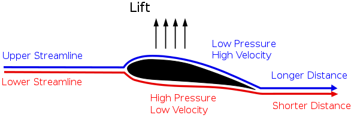

The Bernoulli Principle is basically a law for the conservation of energy in fluids (moving through pipes). This will be our biggest derivation so far, so strap in and get ready to pay attention to words on your screen!
We'll be referring to this figure a lot during the derivation. In this situation, we have an uphill pipe and a body of fluid at the bottom with a constant mass and density. We want it to go uphill, which will require an external force (F1), causing acceleration and doing positive work.
The height at the bottom is called y1, the distance we do work is dx1, and the cross-sectional area of the fluid is A1.
When the body of fluid is at the top, it still has that same mass and density. However, it now has a higher gravitational potential energy due to the larger height. This means that the kinetic energy has decreased, something that can only be caused by an external opposing force (F2) doing negative work at the top.
We will call the height at the top of the pipe y2, the distance of that work dx2 and the cross-sectional area there A2.
Let's start by looking at that work we are doing. At the bottom there is positive work, and there is negative work at the bottom, like so:$$W_{1}=F_{1}dx_{1}$$$$W_{2}=F_{2}dx_{2}$$We can replace F by p*A from Pascal's Law.$$W_{1}=p_{1}A_{1}dx_{1}$$$$W_{2}=p_{2}A_{2}dx_{2}$$An area times a distance becomes a volume, so we get a next step:$$W_{1}=p_{1}V_{1}$$$$W_{2}=p_{2}V_{2}$$Since the first one is positive and the second one is in the opposite direction, we can calculate the total work like so:$$W=p_{1}V_{1}-p_{2}V_{2}$$Since the mass and density are constant, the volume must also be constant between the two states, so we get this:$$W=(p_{1}-p_{2})V$$
Now we are going to look at the changes in energy. Bernoulli's Principle says something about kinetic energy and also potential energy of the fluid. First, let's define the change in kinetic energy like so:$$\Delta K=\frac{1}{2}mv^{2}_{2}-\frac{1}{2}mv^{2}_{1}$$Secondly, we can do the same for (gravitational) potential energy like this:$$\Delta U=mgy_{2}-mgy_{1}$$Finally, using the Work-Energy Theorem, the total work becomes this:$$W=\Delta K+\Delta U$$$$W=\frac{1}{2}mv^{2}_{2}-\frac{1}{2}mv^{2}_{1}+mgy_{2}-mgy_{1}$$We already found that work was equal to something else, so we can combine everything to get the following:$$(p_{1}-p_{2})V=\frac{1}{2}mv^{2}_{2}-\frac{1}{2}mv^{2}_{1}+mgy_{2}-mgy_{1}$$Let's re-arrange the terms to move everything with 1 in it to the left and everything with 2 to the right.$$p_{1}V+\frac{1}{2}mv_{1}^{2}+mgy_{1}=p_{2}V+\frac{1}{2}mv_{2}^{2}+mgy_{2}$$We're almost there, but let's try getting rid of that ugly V by dividing everything by it on both sides:$$p_{1}+\frac{\frac{1}{2}mv_{1}^{2}}{V}+\frac{mgy_{1}}{V}=p_{2}+\frac{\frac{1}{2}mv_{2}^{2}}{V}+\frac{mgy_{2}}{V}$$As we all know, mass divided by volume is equal to density, so our final formula becomes this:$$p_{1}+\frac{1}{2}ρv_{1}^{2}+ρgy_{1}=p_{2}+\frac{1}{2}ρv_{2}^{2}+ρgy_{2}$$And this is Bernoulli's Equation, showing the conservation of energy between two states of a fluid in a pipe.
How does an airplane stay airborne? It's simple, just look at this diagram of a wing.
This is caused by lift force acting on the wing. How this is calculated is too complicated for now, but this is how it works. The air traveling over the curved surface must travel a longer distance in an equal time as the air below the wing, this causes the air above to be faster than the air below. From Bernoulli's Equation we can tell that a higher velocity would result in a lower pressure to make sure the conservation is true. The pressure below is greater than above, and that pressure difference causes lift, pushing the wings up and keeping the plane in the air.